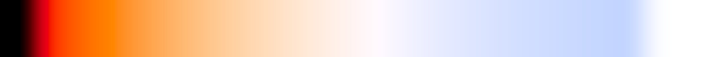

Дождитесь загрузки реликтового излучения
Температура (в Кельвинах):
Размер флуктуаций (в Кельвинах):
Показать реликтовое излучение в мнимых цветах
Двигаться вперёд, показать в настоящих цветах
Зависимость цвета от температуры (от 0 до 12 000 K):
